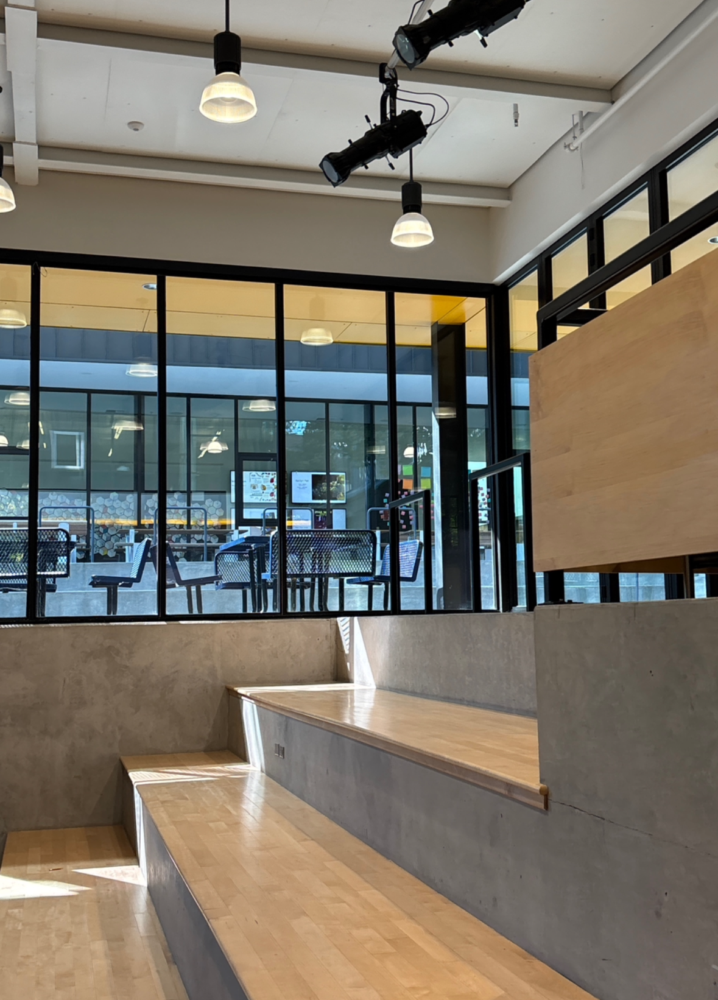

colors that are in this webpage
blue
yellow
brown
colors!
i used these colors because i think they go together well. i think that the emotion could be warmth because yellow and brown are kind of inviting colors. i think it is complementary colors.
